Client Side UI
It's out there...
Hi bandwidth communication between your app and humans.
The Power Of M
Charles Lowell
M is for MVC
The foundational software pattern on which UIs are built
Yeah, but what is it really?
Will the real MVC please stand up.
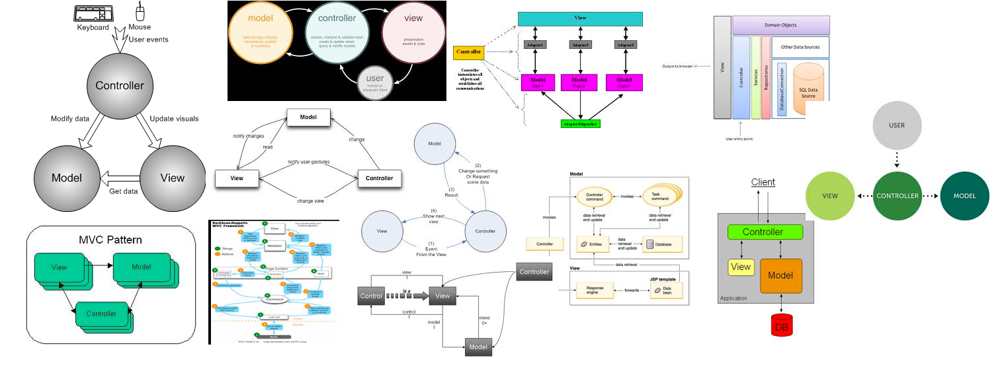
MVC is like testing
Many different schools
Is there a thread that binds them?
Testing
Focus on automated verification
Hey, I've got an idea
Plato's Cave
What we've learned so far:
- Twitter handle
- Plato has a cave
Principle in action
What is a color?
Color Swatch: Project a Color onto a <div/>
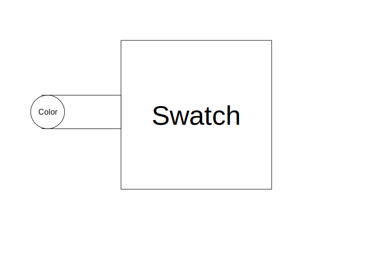
One color, two swatches
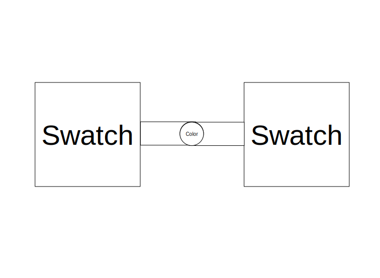
(Swatch on. Swatch off.) X 2
Data Binding
It's not just for templates anymore
Data Binding != Observation
Data Binding
- Conjoins properties of the same data type.
- Higher level abstraction than observation
And the two will become one flesh.
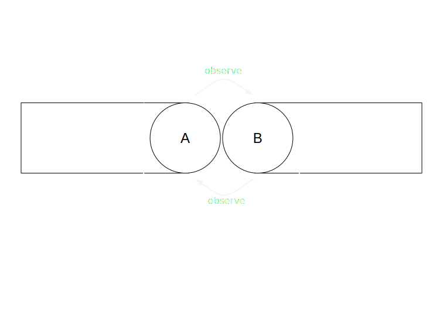
Data Binding
Decouples data flow from computation
Project Color onto Color
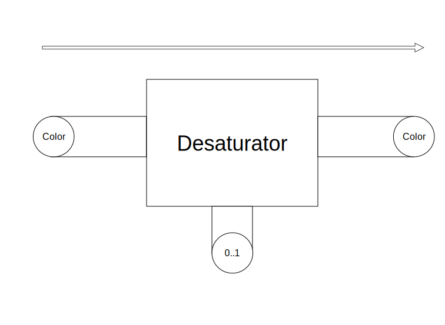
Plug it in with bindings
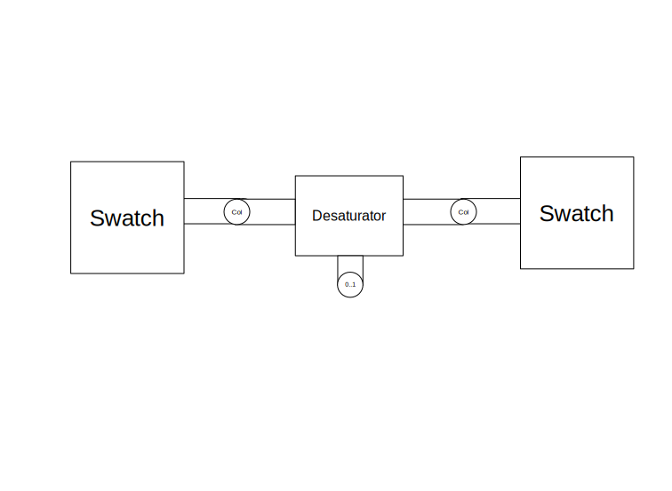
Syntax: A model of serialization and deserialization.
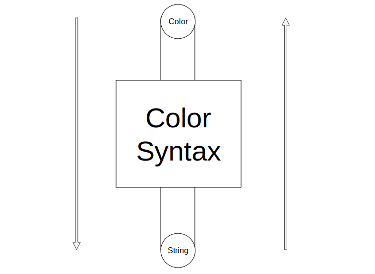
Double text fields. Double fun!
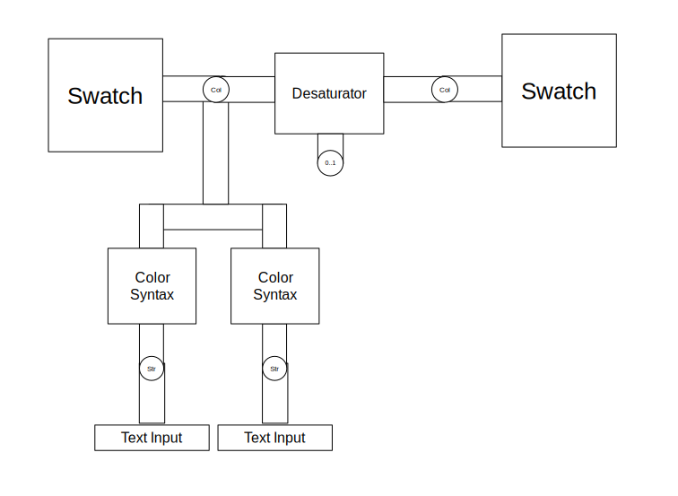
One color. Two text fields.
Recompose for fun and profit.
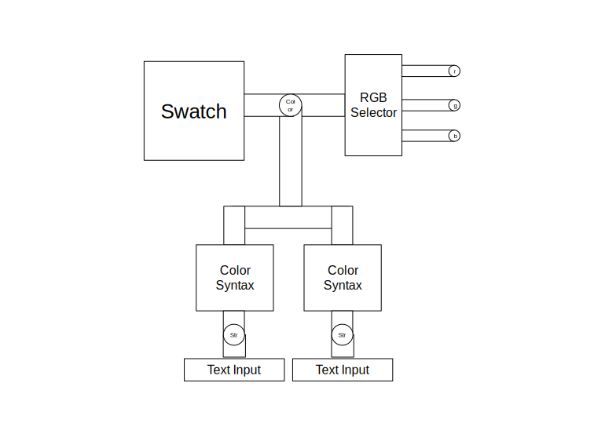
What does an RGB look like?
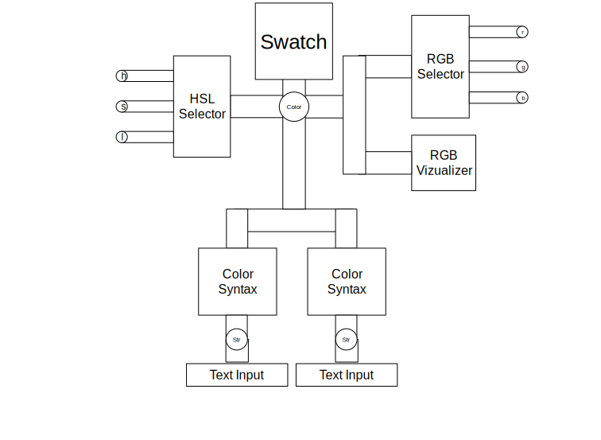
HSL
Color coordinates for humans
Hue
the degree to which a stimulus can be described as similar to or different from stimuli that are described as red, green, blue, and yellow
Saturation
colorfulness of a color relative to its own brightness
Lightness
the subjective brightness perception of a color for humans along a lightness–darkness axis.
Values are everywhere
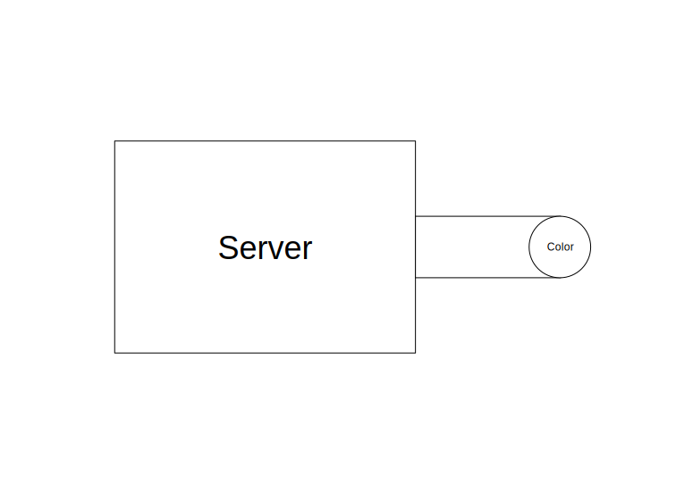
Colorbook
The first social network for color values
Model
A group of values with well understood relationships
It's the understanding part what's hard